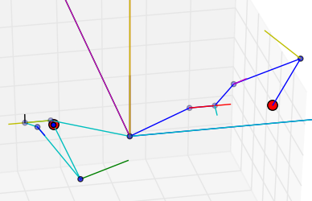

Live demos of what IKPy can do (click on the image below to see the video):


Also, a presentation of IKPy: Presentation.
With IKPy, you can:
Moreover, IKPy is a pure-Python library: the install is a matter of seconds, and no compiling is required.
You have three options:
bash
pip install ikpy
If you intend to plot your robot, you can install the plotting dependencies (mainly matplotlib):
bash
pip install 'ikpy[plot]'
If you work with Anaconda, there's also a Conda package of IKPy:
conda install -c https://conda.anaconda.org/phylliade ikpy
From source - first download and extract the archive, then run:
bash
pip install ./
NB: You must have the proper rights to execute this command
Follow this IPython notebook.
Go to the wiki. It should introduce you to the basic concepts of IKPy.
An extensive documentation of the API can be found here.
The library can work with both versions of Python (2.7 and 3.x).
It requires numpy and scipy.
sympy is highly recommended, for fast hybrid computations, that's why it is installed by default.
matplotlib is optional: it is used to plot your models (in 3D).
IKPy is designed to be easily customisable: you can add your own IK methods or robot representations (such as DH-Parameters) using a dedicated developer API.
Contributions are welcome: if you have an awesome patented (but also open-source!) IK method, don't hesitate to propose adding it to the library!
aversive++ has an inverse kinematics module written in C++, which works the same way IKPy does.